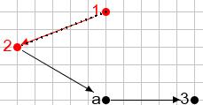
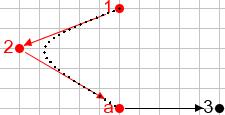
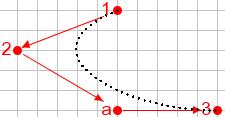
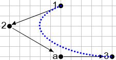
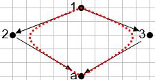
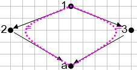

| Back to Ext-algebra page | Examples | View the quiverCAD Java API | Compute an Ext-algebra |
The quiverCAD applet is an applet for drawing the quiver of an algebra. For the purposes of the Ext-algebra web application, this algebra is assumed to be special biserial, so the applet has some special features specific to biserial algebras. For example, it allows only at most two arrows starting or ending at a vertex. The code for the applet has been written to allow it to be adapted to more general situations however.
The quiverCAD user interface consists of a drawing surface with gray grid lines, and a control panel which controls the mode the applet is operating in, a 'Delete' button, and an 'OK' button, for submitting the quiver for computation.
quiverCAD operates in three modes
To enter Draw mode, click on the 'Draw' radio button. In Draw mode, you can use the mouse to insert vertices and arrows into your quiver. In this section, the various methods of creating vertices and arrows are discussed.
To insert a vertex, click the mouse. The vertex will be inserted (roughly) at the point where the mouse was clicked. The applet uses the concept of 'snapping' to grid lines used in many CAD software packages, so that if the point where the mouse is clicked is close enough (within a few pixels) of a grid line, the point will be placed on a grid line. This feature is provided so that the resulting quiver looks neater, with vertices and arrows that line up with each other.
After you insert a vertex, you will notice that it appears in red. This means that it is selected. If you click on a selected vertex, its color changes to black, indicating that it is not selected. In quiverCAD, many operations require items to be selected first. In general, this is done by clicking on (or near) the item. For example, to delete a vertex, select it by clicking on it, then click on the 'Delete' button.
There are two ways of inserting arrows. In either case, the vertex where the arrow originates must be selected first, by clicking on it. To draw the arrow, click on the origin, then drag the mouse. You will see a drag line drawn from the origin of the arrow to the mouse pointer. If you drag the mouse near another vertex then release it, an arrow will be drawn to that vertex. If you release the mouse at a point which is not near a vertex, a new vertex will be created and an arrow will be drawn terminating at the new vertex.
For the purpose of this web application, the algebras are assumed to be special biserial, so it is possible only to draw at most two arrows originating or terminating at any vertex.
Multiple arrows between the same two points can be drawn by drawing over an existing arrow.
Again, after an arrow is created, it appears in red, indicating that it is selected. Newly inserted items are automatically selected to facilitate undoing the insertion by clicking on the 'Delete' button. To delete more than one item at a time, you may continue selecting items (any combination of vertices, arrows) by clicking on them. To remove a selected item from the selection, click on it. When the 'Delete' button is clicked, all selected items are removed, along with any items that depend on the ones which were removed. For example, when a vertex is removed, all arrows originating or terminating at the vertex are also removed, whether or not they were selected.
The labels on the vertices may be edited by selecting the vertex (i.e., clicking on it), then typing the new label on the keyboard. Labels are single characters consisting of the digits 0-9, and the upper and lower case letters and must be unique. This implies a (current) limitation of at most 62 vertices in a quiver. By default, vertices are labeled starting with the digits 1-9, continuing with lower case, then upper case letters, and finally, the digit 0.
The purpose of Move mode is to allow vertices to be rearranged to improve the appearance of the quiver. In Move mode, only one vertex at a time may be selected. The selected vertex can be dragged with the mouse to a different location. While the mouse is being dragged, arrows attached to the point being moved are dragged along. When the mouse is released, the point is moved (using the same principles of snapping to grid lines described above), and the arrows are attached to the vertex are moved accordingly.
Relations mode allows relations to be defined. Zero relations (relations consisting of a path), and commutativity relations (relations involving distinct paths starting and ending at the same vertex) may be defined.
A zero relation is defined by specifying a path in the quiver. The path is specified by clicking on the arrow at the start of the path and holding down the mouse button. To add arrows to the path, drag the mouse over the arrows in order of their appearance in the path. Dragging the mouse over an arrow which cannot be appended to the current path has no effect. While the mouse is being dragged, the current path appears as a dotted curve drawn from the start vertex of the path to the end vertex of the path. The curve is tangent to the start and end arrows of the path at the respective endpoints. When the mouse is released, the curve indicates the path defining the zero relation.
| Defining a zero relation | |
|  Step 1, select arrow |
 Step 2, drag over next arrow |
|  Step 3, drag over next arrow |
 Step 4, release mouse |
To define a commutativity relation, first define the two paths involved in the commutativity relation temporarily as zero relations. Next, select the two zero relations by clicking near them. Type the equals (=) key on the keyboard while the two relations are selected. The relations will change color, and equal signs will appear next to each path in the relation, indicating that the paths are equal modulo the ideal generated by the relations.
| Defining a commutativity relation | |
|  Step 1, select two zero relations |
 Step 2, type the '=' key |
Undo/redo buttons are provided on the control panel. You can undo any action performed on the quiver including insertion of points, arrows and relations, and moving of points. The redo button reverses the effect of the undo button, so that you can move forward and backward in the sequence of actions performed on the quiver. There is no limit to the number of levels of undo, that is, you may undo all the way back to the beginning of the edit session.
The following fixes/enhancements are planned. Requests for other changes are welcome.
| Back to Ext-algebra page | Examples | View the quiverCAD Java API | Compute an Ext-algebra |
(c) 2003 Peter Brown (pbrown@microbio.umass.edu)